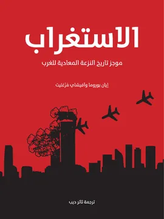

الاستغراب: موجز تاريخ النزعة المعادية للغرب

قراءة عربية أصلية محددة النطاق في الصفحات 13 إلى 18 من ملف PDF المرتبط، وليست تلخيصا كاملا للكتاب. نناقش ما تدعمه هذه المقاطع فقط.
كيوتو ١٩٤٢: كيف نتغلب على ما هو حديث؟
يرسم الفصل الافتتاحي مشهدًا دالًا: في تموز ١٩٤٢، بعد سبعة أشهر بالتمام والكمال على تفجير اليابان الأسطول الأمريكي في بيرل هاربر وسحق القوى الغربية في جنوب شرق آسيا، اجتمع عدد من الباحثين والمثقفين اليابانيين المعروفين في مؤتمر في كيوتو؛ كان بعضهم من رجال الأدب المنتمين إلى ما كان يدعى بـ«الجماعة الرومانتيكية»، وبعضهم الآخر فلاسفة ينتمون إلى مدرسة كيوتو البوذية الهيغلية، وكان موضوع النقاش «كيف نتغلب على ما هو حديث». كان ذلك زمن حماس قومي، وكان جميع المثقفين المشاركين من القوميين على هذا النحو أو ذاك، والغريب أن أحدًا لم يكد يأتي على ذكر الحرب ذاتها، سواء في الصين أو هاواي أو جنوب شرق آسيا؛ غير أن واحدًا على الأقل من الحاضرين، وهو هاياشي فوزاو الذي سبق أن كان ماركسيًا وتحول إلى قومي متحمس، كتب لاحقًا أن الهجوم على الغرب أفعم قلبه بالبهجة، وأنه على الرغم من وجوده في منشوريا المتجمدة لدى سماعه الأنباء، شعر كما لو أن غيومًا سوداء قد انقشعت لتبين عن سماء زرقاء صافية، ولا شك أن كثيرًا من زملائه قد شعروا بمثل ما شعر.
زاوية وحدود القراءة
قراءة موجزة من ص ١٣ إلى ص ١٨ من أصل ١٢٠ صفحة، تعرض مطلع الكتاب، لا الكتاب كاملًا.
الطبعة والقراءة
هذه النسخة من الكتاب صادرة ومتاحة مجانًا بموجب اتفاق قانوني بين مؤسسة هنداوي والسيد الأستاذ ثائر ديب.
تنزيل PDF المجاني ↓ القراءة والمصدر الرسمي ↗